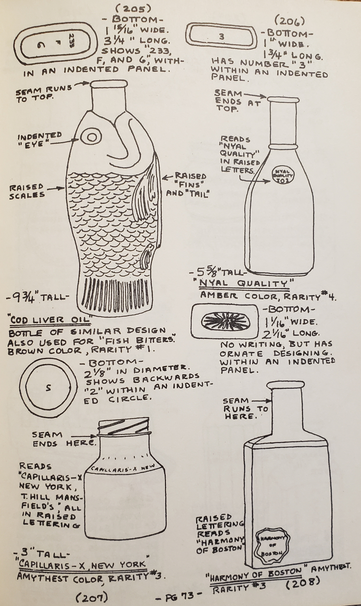
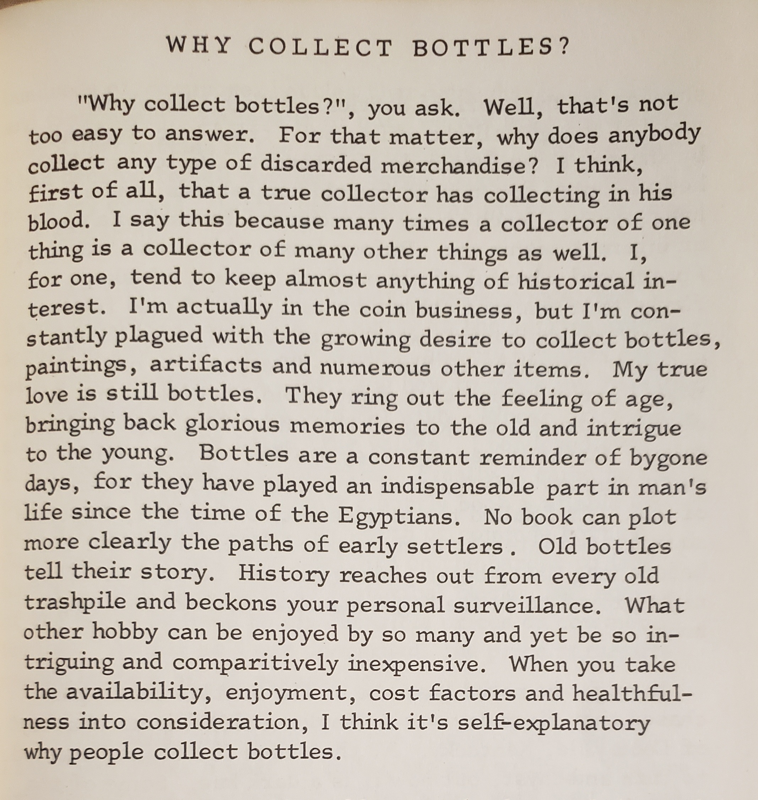
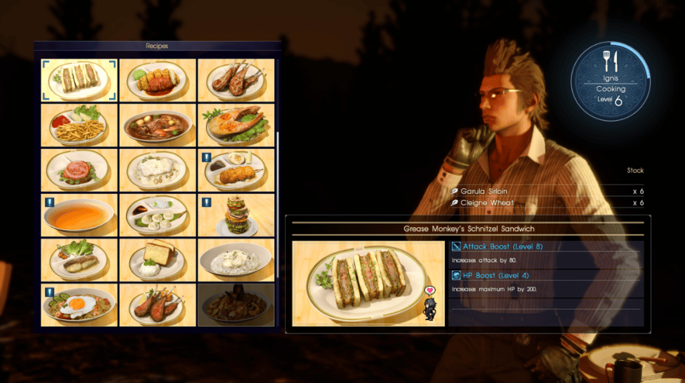
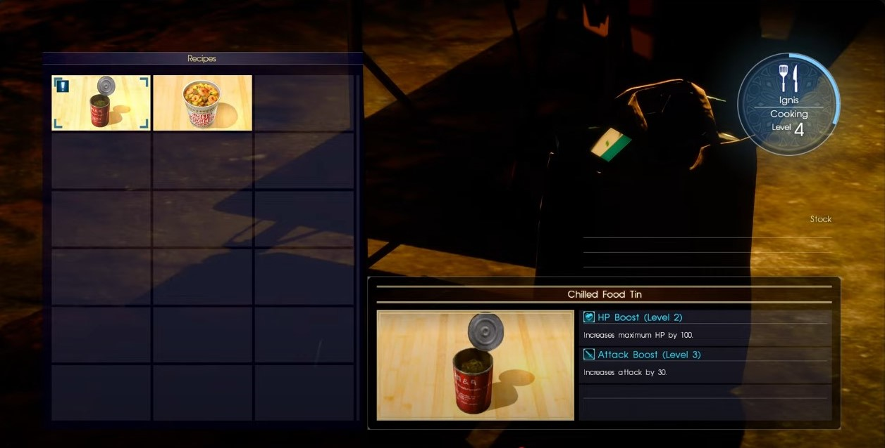
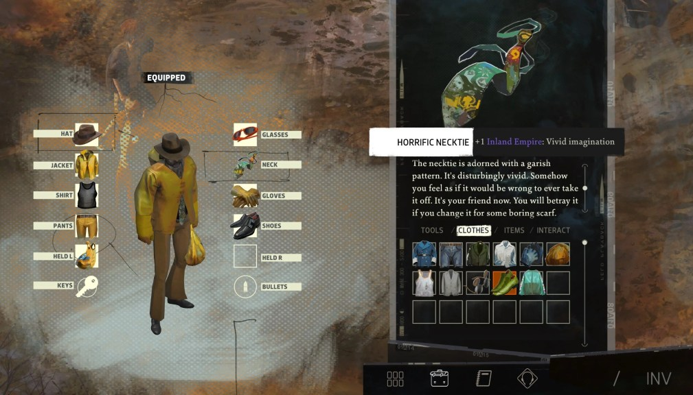
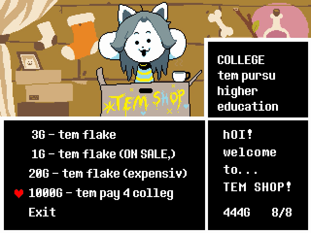
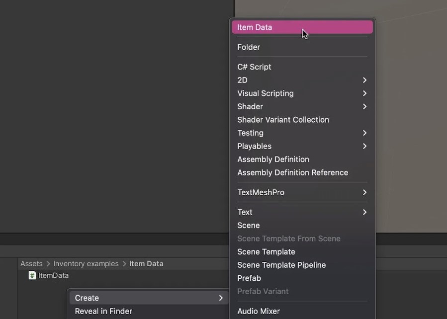
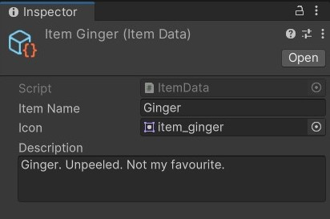

Inventory Database
📦 Unity packages from today's class:
- Class Demo: Simple Inventory Database using Scriptable Objects and Arrays
- The scripts for this package are also available as a .zip here: https://drive.google.com/file/d/1oFrPHVK3bQh-s26JzEk3Yfs8yvf584TC/view?usp=sharing
- For dynamic inventories using Lists, refer to this older package example that I made for this lesson in Fall 2024: Inventory System (Fixed and Dynamic) using Scriptable Objects, Lists, and/or Arrays
📚 Other relevant resources to today's topic:
- More on narrative and mechanical possibilities of inventory databases, listed under the Requirements section of Project 3 page.
- Recommended video tutorials:
- Scrollable UI Panels -- could be used for your long Inventory lists! https://www.youtube.com/watch?v=XJdtxELpbh8
Recording 1: Lecture component
Recording 2: Tutorial Demo component
Zines as archival technology; containers of information and ideology


...that can both resist and reflect contemporary histories
Video game inventory catalogue as a narrative and mechanical device


Objects of Time
- Items as historical artefacts.
- Collection, equipment, and consumption as player expression in the present game world.
- Inventory as a keyholder for future possibilities.



Anatomy of an Inventory Database
This demo uses techniques mentioned in this gamedevbeginner article "How to Make an Inventory System in Unity"
When making inventory systems, you're typically dealing with three different elements:
- Item Data: a definition of an item, such as name, sprite icon, description, uses/functions/effects, etc.
- Item Instance: an instance of an item data that exists in your game scene, which may have unique characteristics from other instances of the same item type.
- Container: a storage unit for containing a number of items, typically in a list or array.
- UI Display Handler: for visualising inventory information within the game.
The setup for your inventory system will look differently depending on how your project works and what it specifically needs. This example will use a cooking game example to demonstrate:
- how to create and store a database of items inside our project folder using scriptable objects, lists and/or arrays;
- how to display our item container (or player inventory) in the UI canvas; and
- how to add and remove items from our inventory during runtime.
Let's start by making a scriptable object for our item data.
Item Data using Scriptable Objects
Why use scriptable objects?
Scriptable objects are script asset templates that allow you to create instances of a script inside your project, not your scene. Think of them as prefab templates for making multiple scripts of the same type. However, unlike prefabs themselves, you aren't storing an entire GameObject inside your folder -- you're only storing data. And because scriptable objects live inside your project, they are accessible throughout multiple scenes in your game.
In this example, we can use scriptable objects to make a template for storing item data, and then make multiple instances of this template for defining different types of items.
How to create a scriptable object
- Create a C# script called "ItemData", then open it.
- Replace
MonoBehaviourwithScriptableObject. Then add the[CreateAssetMenu]attribute above this line -- this lets you create an instance of this scriptable object by right-clicking in your assets folder > Create > Item Data.
using UnityEngine;
[CreateAssetMenu]
public class ItemData : ScriptableObject
{
public string itemName;
public Sprite icon;
[TextArea] public string description;
//The "TextArea" attribute enables a height-flexible
// and scrollable text input field inside our inspector.
}
//this example only uses a single type of item data.
//depending on your project needs,
//you may consider making multiple types of item data
//according to more specialised classes
//(e.g. equipable items, consumable items)
- Save the script above, and return to the Unity Editor. Right click in your assets folder, then go to Create > Item Data.

- In the inspector, you can fill in the details for an item in your game. You may create a new item data asset for every possible item in your game.

Next, let's make a serializable class for our item instance.
Item Instance
Our ItemInstance class will create a constructor method that accepts an ItemData asset to generate default values for its variables.
using UnityEngine;
[System.Serializable]
public class ItemInstance
{
public ItemData itemType;
public Sprite sprite; //we can assign the ItemData defaults in our constructor method
public string description; //we can assign the ItemData defaults in our constructor method
public int qty; //this data is really only used for the Inventory Array example.
//let's say you want to be able to update/edit
//the item data for different instances of the same item
//you can make a constructor method that
//takes the ItemData as a default template,
//but you can eventually pass different information
//into this instance's variables later on.
public ItemInstance(ItemData itemData)
{
itemType = itemData;
sprite = itemData.icon;
description = itemData.description;
qty = 0;
}
//you might customise this constructor
//for generating different versions of this item
//(e.g. pickup items with different qtys)
public ItemInstance(ItemData itemData, int itemQty)
{
itemType = itemData;
sprite = itemData.icon;
description = itemData.description;
qty = itemQty;
}
}
Item Container, or Inventory Manager
In my example, I've made my inventory list managers scriptable objects so that they can persist across multiple scenes. If you only have one scene in your game, you could also set it as a Monobehaviour class instead.
(Note: Although it appears as if the scriptable object is saving data in your folder every time you play in the Unity Editor, this information will not be persistent once the Unity build application closes.)
There are two methods for organising your inventory system: using lists or arrays.
Using Lists for Inventory Systems
The benefit of lists is that their size can change dynamically throughout runtime. Note that though lists otherwise operate very similarly to arrays, they often use different syntax for their variables and method functions that otherwise essentially do the same thing.
To declare a List
List<VariableType> listName = new List<VariableType>();
//same as:
//"List<VariableType> listName = new();"
To get the total number of items in a list
//instead of length, we call this a count!
int listCount = listName.Count;
To access an item in a list
//for example,
//to get the first element in a string list,
string str = listName[0];
//this is also how you would access
//an element in an array.
To add or remove items from a list
listName.Add(someObject);
listName.Remove(list[0]);
//using a gameObject reference
listName.RemoveAt(0);
//using an integer index
//removes the first item
//watch out for out of range errors.
listName.RemoveRange(1,2);
//removes 2 values starting at index 1
listName.RemoveAll(x => x.CompareTag("Pickup"));
//removes all items in the list
//that match the condition listed.
listName.Clear()
//removes all items in your list.
In my example, I've used lists to store 1 item in each inventory slot. My inventory also has a maximum capacity, so it won't be able to add more items into the inventory beyond that limit.
using System.Collections;
using System.Collections.Generic;
using UnityEngine;
//because this is a scriptable object
//i also had to create a new InventoryListManager asset
//inside my project asset folder in order to
//use this system in my game.
[CreateAssetMenu]
public class InventoryListManager : ScriptableObject
{
public List<ItemInstance> inventory = new();
// contains item instances
public int maxCapacity = 6;
// maximum inventory slots available
public bool HasSpaceForNewItem(ItemInstance itemToAdd)
{
//do we have an empty slot in our list?
for (int i = 0; i < inventory.Count; i++)
{
if (inventory[i] == null)
{
//if so, let's assign this slot to the new item!
inventory[i] = itemToAdd;
return true;
}
}
//is the size of our inventory list less than max capacity?
if (inventory.Count < maxCapacity)
{
//if so, let's make a new slot, and add our new item there!
inventory.Add(itemToAdd);
return true;
}
//otherwise, we don't have space for a new item!
Debug.Log("No space in inventory.");
return false;
}
}
Here is how the demo looks like, with another script called "InventoryListDisplay" that uses the information in our manager for in-game functionality (e.g. updating UI graphics, button functions etc.)
This is an example of a dynamic inventory system that can hold a number of items but without specifiying ahead of time what those items may be.

Using Arrays for Inventory Systems
There are instances when it may make more sense to use an array for your purposes.
In a different version of this example, I made an fixed inventory system using arrays. I didn't need the resizability of a dynamic inventory system like in my previous example, and therefore opted to use arrays for my inventory system instead.
[CreateAssetMenu]
public class InventoryArrayManager : ScriptableObject
{
public ItemInstance[] inventory;
// contains item instances
public ItemData[] allPossibleItems;
// the player either has or doesn't have the item
// so inventory size remains fixed
// (but visibility of item UI graphics get toggled off
// if item qty is 0 -- see: InventoryArrayDisplay.cs)
//initialise array, if not yet already done so.
public void ResetInventory()
{
inventory = new ItemInstance[allPossibleItems.Length];
for (int i =0; i < inventory.Length; i++)
{
inventory[i] = new ItemInstance(allPossibleItems[i]);
}
}
//checks if we are removing the last item
//we will use this to determine whether UI graphics for that item
//should be switched off.
public bool IsRemovingLastItem(ItemInstance item)
{
item.qty--;
if (item.qty == 0)
{
return true;
} else
{
return false;
}
}
}
Here is how the demo looks like, with another script called "InventoryArrayDisplay" that uses the information in our manager for in-game functionality.
Here, because the items that will enter our inventory are predictable, we can stack same items in the same inventory slot, and mark the quantity number next to their icon.

Inventory UI Display Handler
In my array example, I have a MonoBehaviour script for updating and displaying the inventory through images, panels, and buttons.
Note: This script is taken from a different project, so the names may not match entirely with the example scripts above.
using UnityEngine;
using UnityEngine.UI;
using TMPro;
public class InventoryDisplayHandler : MonoBehaviour
{
//drag in our inventory manager scriptable object from our assets.
public InventoryManager inventoryManager;
[Header("selected item display")]
public GameObject selectedItemParentGroup;
public Image selectedItemImage;
public TextMeshProUGUI selectedItemName, selectedItemDescription;
int currentSelectedItem;
[Header("inventory item slots")]
public GameObject[] inventoryItemSlots;
private void Awake()
{
//initialise our inventory manager on awake.
inventoryManager.ResetInventory();
//update our inventory UI display
UpdateInventoryItemSlots();
}
public void UpdateInventoryItemSlots()
{
for (int i=0; i<inventoryItemSlots.Length; i++)
{
//if item has 1 or more qty
if (inventoryManager.inventory[i].qty > 0)
{
//show the item slot
if (!inventoryItemSlots[i].activeSelf)
{
inventoryItemSlots[i].SetActive(true);
}
//update item sprite and color
inventoryItemSlots[i].GetComponent<Image>().sprite = inventoryManager.inventory[i].sprite;
inventoryItemSlots[i].GetComponent<Image>().color = inventoryManager.inventory[i].color;
inventoryItemSlots[i].transform.GetComponentInChildren<TextMeshProUGUI>().text = inventoryManager.inventory[i].qty.ToString();
} else
{
//item qty = 0
//hide the slot
if (inventoryItemSlots[i].activeSelf)
{
inventoryItemSlots[i].SetActive(false);
}
}
}
}
//attached to the button OnClick functions of my inventory slots.
// each slot is assigned a different index number to call inside the inspector.
public void UpdateItemInfoPanel(int index)
{
if (!selectedItemParentGroup.activeSelf)
{
selectedItemParentGroup.SetActive(true);
}
currentSelectedItem = index;
//update item info panel with data relevant to the selected item
selectedItemImage.sprite = inventoryManager.inventory[index].sprite;
selectedItemImage.color = inventoryManager.inventory[index].color;
selectedItemName.text = inventoryManager.inventory[index].itemName;
selectedItemDescription.text = inventoryManager.inventory[index].description;
}
//just for demonstration purposes, let's have a function to add a random item to our inventory
public void AddRandomItem()
{
//select a random item instance from inventoryManager
//and add 1 to its qty property.
inventoryManager.inventory[Random.Range(0, inventoryManager.inventory.Length)].qty++;
UpdateInventoryItemSlots();
}
//when we use an item, we want to reduce the item qty by 1 from the inventory database
// (which IsRemovingLastItem is responsible for)
public void UseItem()
{
//add whatever function you want to happen when we use an item here
if (inventoryManager.IsRemovingLastItem(inventoryManager.inventory[currentSelectedItem]))
{
inventoryItemSlots[currentSelectedItem].SetActive(false);
}
UpdateInventoryItemSlots();
//close out the item info panel after using item.
selectedItemParentGroup.SetActive(false);
}
}
Some course reminders
- Check your email re: one-on-one meething schedules for the next two lessons.
- Student Experiences of Teaching (SET) Surveys are now accepting responses until Week 10 Saturday, June 7, 8a.m.